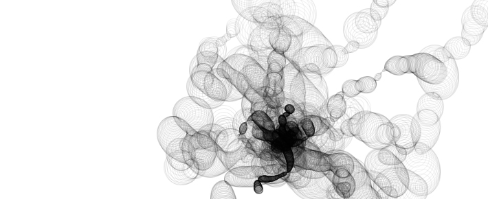
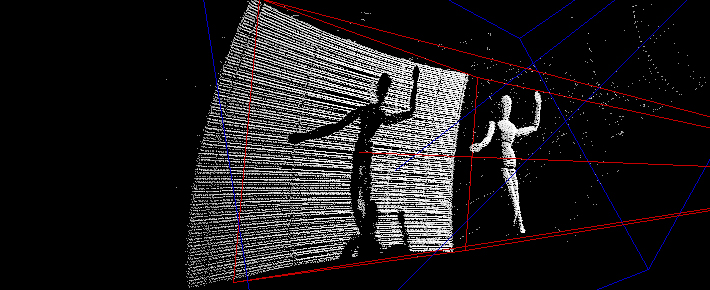

autoslide, typographic info, custom buttons images, custom thumbnails size
Anemone - G.C. Mingati
Director of Technology Aaron Koblin
Emitter - G.C. Mingati

Meander - P.J. Onori
Empathy - K. McDonald

DIY 3D Scanner - K. McDonald
Coronal Loops - G.C. Mingati
 Empathy - K. McDonald
Empathy - K. McDonald